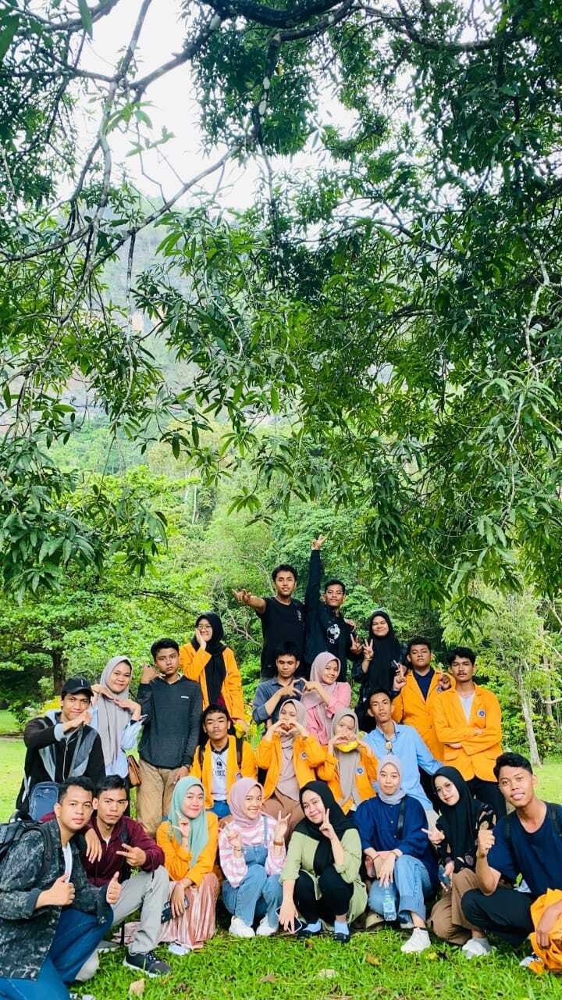

Nama: Khirina Khairur Rooziqina
NIM: 2305401107
Kelas: PTIK F
Alamat: JL. Swesambada Barat, Kebon Bawang, Jakarta Utara
Alamat: Perum. Griya Metro Residence, Barombong,Makassar
Sekolah asal SMANegeri20 Makassar
Universitas Negeri Makassar
"Believe in yourself and all that you are."
| Pengalaman di PTIK F |
|
Kuliah adalah salah satu pengalaman terbaik dalam hidup saya. Saya belajar banyak hal dari pelajaran dan kehidupan, dan saya diperkenalkan kepada orang-orang baru yang akhirnya menjadi teman baik.
Saat kuliah juga saya memiliki jadwal keseharian yang teratur. saya membangun rutinitas yang membantu saya mengelola kesibukan dan memastikan bahwa semua tugas saya aman.
| |
|---|
Daftar mata kuliah yang telah yang dipelajari
- Bahasa Inggris
- Matematika Dasar
- Pendidikan Agama Islam
|
|---|
|
Daftar Dosen:
Alifya Nurilmi H. S.pd, M.Pd
Iwan Suhardi, S.T, M.T
|
|---|
|  |
Tabel Teman Dekat
| No |
Nama |
Jenis Kelamin |
Alamat |
Asal Sekolah |
| Panggilan |
Lengkap |
| 1 |
Thifal Nur Zihni NJ Tambi |
Thifal |
Wanita |
Bulukumba |
MA Arifah Gowa |
| 2 |
Stelani Yunianti |
Lani |
Wanita |
Mamuju |
SMK Negeri 1 Karossa |
| 3 |
Mirza Triasita |
Mirza |
Wanita |
Gowa |
SMA Negeri 20 Makassar |
| 4 |
Nur Hikmah Pratiwi |
Hikmah |
Wanita |
Barombong |
SMA Negeri 20 Makassar |
Don't miss this incredible song!